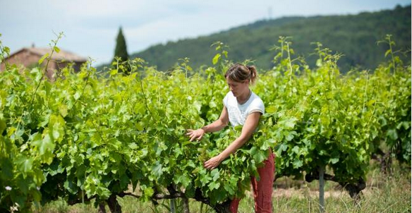
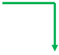

Instaurée en France par la loi de modernisation
sociale du 17 janvier 2002, la VAE s’impose comme une nouvelle voie de certification au même titre que la formation initiale, la formation continue et l’apprentissage.
« Toute personne engagée dans la vie active est en droit de faire valider des acquis de l’expérience notamment professionnelle, en vue de l’acquisition de diplôme,
d’un titre à finalité professionnelle ou d’un certificat de qualification figurant une liste établie par la commission paritaire nationale de l’emploi d’une branche professionnelle »
Enregistré dans le Répertoire National des Certifications Professionnelles (RNCP) visé à l’article
L335-6 du Code de l’Education (article 133)
Remarques :
L’expression « en rapport avec le diplôme » doit être interprétée comme en relation avec tout ou une partie des activités visées par le référentiel du diplôme : ce rapport s’établit lorsque le candidat peut identifier et prouver ces activités au moyen de bulletins de salaire pour un salarié, attestation d’organisme collecteur de cotisations…
Toutefois, c’est l’activité globale du candidat qui est prise en compte et non une lecture point par point des tâches ou des missions effectuées.
L’activité bénévole est « une activité en direction d’autrui, non salarié, non soumise à l’obligation de la loi et librement engagée en dehors du temps professionnel ou familial. Si cette activité est exercée dans le cadre d’une association, le bénévole ne doit être soumis à aucun lien de subordination juridique ».
Les trois années d’exercice d’activités sont des années équivalant à trois années de temps plein quel que soit le nombre de périodes considérées.
Sont exclus de ces trois années équivalent temps plein : « les périodes de formation initiale ou continue, quel que soit le statut de la personne, ainsi que les stages et les périodes de formation en milieu professionnel effectués pour la préparation d’un diplôme ou d’un titre ne sont pas pris en compte dans la durée d’expérience requise » (cf. article 2 du décret n° 2002-615 du 26 avril 2002). Certains contrats de travail incluant de l’alternance (apprentissage, qualification, professionnalisation) ne peuvent en aucun cas compter pour la durée de l’expérience requise.
La VAE est donc tout à la fois :
- Un droit individuel de toute personne souhaitant faire reconnaître ses acquis de l’expérience en vue de l’obtention d’une certification
- Une voie d’accès à la certification prévue dans un cadre réglementaire, un acte officiel
- Une procédure propre à chaque certificateur visant à vérifier, évaluer et certifier des compétences par une autorité indépendante et souveraine qu’est le jury de validation.
« La validation produit les mêmes effets que le succès à l’épreuve ou aux épreuves de contrôle des connaissances et des aptitudes qu’elle remplace. » (cf. code de l’éducation, article L613-4).
Pour quels diplômes ou titres ?
L’ensemble des diplômes et titres de l’enseignement technique ou professionnel du ministère chargé de l’Agriculture, inscrits au RNCP2
- Certificat d’Aptitude Professionnelle Agricole (CAPA)
- Brevet d’Etudes Professionnelles Agricoles (BEPA)
- Brevet Professionnel Agricole (BPA)
- Brevet Professionnel (BP) dont BP Responsable d’Exploitation Agricole (BPREA), BP Aménagement paysagers (BP AP)
- Baccalauréat Professionnel relevant du champ du ministère chargé de l’Agriculture
- Brevet de Technicien Supérieur Agricole (BTSA)
- Certificat de Spécialisation (CS)

1) Les étapes du parcours d’un candidat et la procédure de VAE
Information-orientation : le candidat obtient une information générale sur la VAE. Il prend connaissance de la diversité de l’offre qui se présente à lui et des différents ministères valideurs. Cette information peut être obtenue auprès des points relais-conseil.
Conseil : il permet au candidat, orienté vers un organisme valideur, d’être informé précisément sur toutes les possibilités qui s’offrent à lui et de choisir la solution la plus adaptée à son expérience et à son projet.
Recevabilité et inscription à un diplôme en vue de son obtention par la voie de la VAE : c’est le premier acte administratif. L’autorité académique instruit la recevabilité du dossier du candidat. L’analyse de la recevabilité porte, d’une part, sur la durée de l’expérience à valider et, d’autre part, sur la nature de l’expérience à valider et son lien avec les objectifs visés par le diplôme. Un dossier d’inscription jugé recevable autorisera le candidat à s’engager dans la démarche de VAE.
Réalisation du dossier de validation : le candidat inscrit rédige le dossier de validation qui sera remis au jury.
L’accompagnement est un droit qui permet aux candidats qui le souhaitent d’être assistés dans leur démarche de VAE, notamment dans l’élaboration de leur dossier.
Examen du dossier de validation effectué par le jury, sous la responsabilité de l’autorité académique.
Entretien du candidat avec le jury.
2) Particularités de la procédure VAE au ministère chargé de l’Agriculture
A. Au premier passage, le jury décide d’une :
– validation totale : le diplôme est attribué,
– non-validation : le candidat peut se présenter à nouveau devant un jury dans un délai maximal de cinq ans.
Si le diplôme ne peut être attribué dans sa totalité lors du premier passage, le jury indique, dans le relevé de décisions, la liste des Connaissances, Aptitudes et Compétences (CAC) manquantes et fournit des indications ou des préconisa-tions concernant la ou les façons dont le candidat peut faire la démonstration de l’atteinte de ces CAC manquantes dans un dossier complémentaire.
Nota: Il n’y a pas de validation partielle au premier passage
B. Au second passage, le jury décide d’une :
– validation totale : le diplôme est attribué,
– validation partielle : le jury indique la liste des unités capitalisables (UC) validées (pour les diplômes en UC) ou la liste des épreuves acquises dont le candidat sera dispensé s’il s’inscrit à l’examen (pour les diplômes modulaires),
– non-validation.
Les étapes du parcours du VAE
Information Orientation Conseil : Demande de renseignements auprès de
structures d’accueil (Points Relais Conseil, organisme valideur)
Système d’information spécifique à chaque région
Constitution du dossier de validation et dépôt auprès de la DRAAF-SRFD
Dossier demandé auprès de la DRAAF-SRFD de la région de
résidence du candidat Recevabilité instruite par la DRAAF-SRFD
Dépôt en 7 exemplaires :Le dépôt du dossier doit se faire au minimum 7 semaines avant la date du jury
Dépôt du dossier de recevabilité et inscription au diplôme
Accompagnement à la demande du candidat
JURY VAE (analyse du dossier + entretien obligatoire)
Non-validation
Validation totale
Constitution d’un dossier complémentaire de validation déposé à la DRAAF-SRFD
Cinq ans maximum entre le premier et
le deuxième passage en jury
Dossier complémentaire constitué à partir de la liste des connaissances, aptitudes et compétences
(CAC) manquantes et des préconisations du jury
JURY VAE (analyse du dossier + entretien facultatif)

Non-validation
Validation totale
Validation partielle Attribution d’Unités
3) Le jury VAE : composition et rôle
La composition du jury : L’organisation du jury peut être, selon le diplôme, nationale (BTSA), interrégionale (Baccalauréat Profession-nel, CAPA, BEPA) ou régionale (diplômes en UC).
La composition du jury doit être conforme à la fois au décret d’application de la VAE et à la réglementation de chaque diplôme (cf. arrêté de création du diplôme). Le jury est composé :
• d’enseignants ou formateurs pour majorité (de 50 à 75 % des membres de jury selon les diplômes),
• de représentants qualifiés des professions concernées (25 à 50 % des membres du jury selon les diplômes), pour moitié employeurs et pour moitié salariés occupant un emploi visé par le diplôme, lorsque le diplôme concerne des emplois salariés.
« Les membres de jury appartenant à l’entreprise ou à l’organisme employant le candidat ne peuvent participer aux délibérations du jury le concernant. Il en va de même pour les personnes l’ayant accompagné. »
Le rôle du jury :
Les membres de jury travaillent dans le respect de la charte interministérielle de déontologie qui rappelle les principes de neutralité, d’objectivité de l’évaluation, de respect de la confidentialité, d’égalité de traitement, de solidarité du jury
Le rôle des membres de jury de VAE consiste à vérifier et évaluer les acquis présentés dans le cadre de l’expérience décrite par le candidat au regard du référentiel de diplôme. Ce sont les jurys de validation des acquis de l’expérience qui sont responsables de l’attribution de tout ou partie du diplôme ou du titre.
Ils sont constitués et présidés conformément aux décrets d’application de la VAE (n° 2002-590 du 24 avril 2002 et n° 2002-615 du 26 avril 2002) et se prononcent, s’il y a lieu, sur la nature des CAC qui doivent faire l’objet d’un contrôle complémentaire.
Comme pour toute voie de certification, le jury est souverain dans sa décision de proposition de validation. « La décision de validation prise par le jury est notifiée au candidat par l’autorité qui délivre la certification. »
Les missions du jury sont, pour un diplôme donné :
- d’identifier et vérifier les acquis du candidat par l’analyse des activités présentées dans le dossier de validation,
- de préparer et conduire l’entretien avec le candidat,
- de délibérer,
- de décider de l’étendue de la validation accordée.
Le rôle du président de jury :
Le président est garant de la mise en œuvre de la VAE dans le respect du cadre réglementaire et des grands principes d’évaluation des acquis issus de l’expérience. Il est le garant de la méthodologie appliquée et de sa déclinaison au sein du jury.
Le président est l’interlocuteur de l’autorité académique : il reçoit et transmet les documents officiels.
Le président est l’animateur du jury : il veille à ce que chacun y trouve sa place et s’exprime. Il peut être amené à rappeler le cadre de la VAE et le rôle de chacun si un ou des nouveaux membres sont présents lors d’une session de jury. Il s’assure qu’aucun membre de jury ne connaît un ou des candidats.